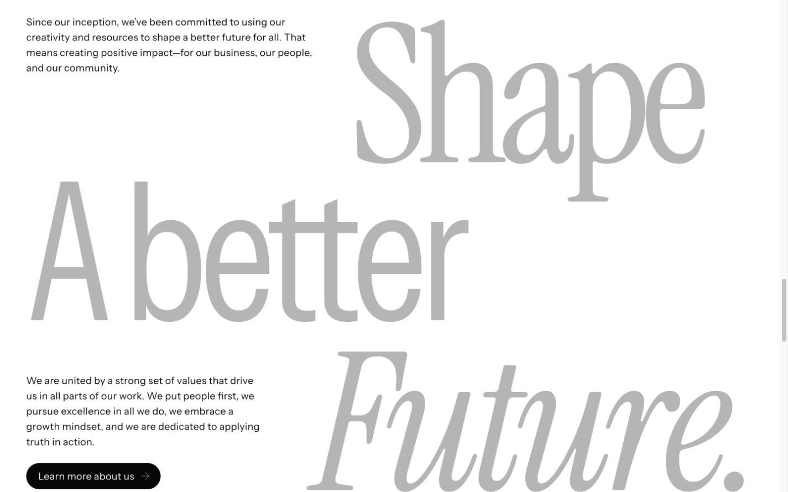
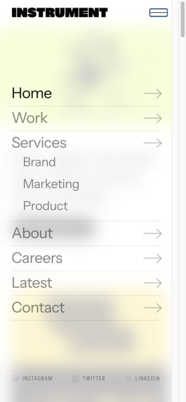

Instrument.
Motion, measured.
A shared vocabulary.
A carefully timed composition.
A small vocabulary, used everywhere.
Instrument’s homepage relies on repetition and restraint: one shared reveal system, a measured navigation pill, timed rotations, and media. The large visual changes inside the opening reel are video edits; they are not individual webpage animation timelines.
The implementation is Nuxt/Vue + GSAP + anime.js + Swiper + CSS + Vimeo. GSAP handles split-text entrances, batch reveals, work filtering and page-load choreography. Anime.js handles the moving navigation bead and mobile menu. CSS supplies hover states, announcement transitions and logo swaps. Swiper supplies the service slideshow.
| Where | Motion | What actually drives it |
|---|---|---|
| Header / wordmark | SVG-path intro, direction-sensitive header, measured pill, announcements | GSAP, anime.js, CSS and a CMS timer |
| Hero | Ambient loop, viewport playback, poster-to-reel fade | Vimeo media plus a 330ms CSS transition |
| Intro / text touts | Word reveal followed by the CTA | SplitText + GSAP + a one-shot observer |
| Recent work | Whole-section fade, category fade-out/in, media zoom-out, sibling dim | GSAP + active-grid state + CSS |
| Clients / recognition | Whole-section fade, column-wise random logo rotation | Observer + 2500ms timers + CSS |
| Services | Batch entrance of two columns, six-slide crossfade and progress bars | ScrollTrigger batch + Swiper + CSS |
| Purpose | Parent fade and three independently triggered character reveals | Four observers; title opacity remains 0.3 |
| News / footer | Batch cards, word entrances, hover feedback; footer content itself stays still | Shared reveal helper + CSS |
Audited 7 October 2026 at desktop widths 1280/1440px and a 390px narrow viewport. Source facts, live observations and study reconstructions are distinguished. A narrow fine-pointer browser is not a touch-device test.
Reveal the mark before the page.
On the first large-logo load, ten SVG paths fade in over 800ms, starting at 500ms with a 40ms path stagger. Navigation starts at 800ms and takes 400ms. The page scrim is appended after the preceding timeline, then fades away over 400ms. All use Power1.easeOut, a quadratic ease.
Subsequent large-logo runs use a 400ms simultaneous path fade. Small-logo pages use another branch. Reduced motion sets the tween durations to zero, but explicit timeline positions remain; “zero duration” does not automatically remove every delay.
Wordmark and scrim
Original SVG paths. The surrounding shell is a reconstruction of the first large-logo branch.
Ready. Replay, scrub, or use the study controls.
Source: usePageLoad.b2989f0a.js · default.5e393356.js · GlobalHeader.85b5dafa.css
Extracted settings / implementation notes
{
"firstVisitLogoPaths": 10,
"logoStartMs": 500,
"logoDurationMs": 800,
"pathStaggerMs": 40,
"navStartMs": 800,
"navDurationMs": 400,
"scrimFadeMs": 400,
"ease": "Power1.easeOut",
"subsequentLargeLogoDurationMs": 400,
"reducedMotion": "Durations set to0; explicit timeline positions remain."
}One trigger. Several granularities.
The shared helper uses an IntersectionObserver with rootMargin:0px 0px -15% 0px and threshold 0. The lower 15% of the viewport does not count. On entry it starts an animation and unobserves that target, so ordinary reveals run once.
A plain fade takes 500ms with quadratic easing. Split words, characters and lines each take 1000ms with expo.out; opacity goes 0→1 and y goes 20→0px, with a 50ms stagger. Text touts append the CTA as another target after their words. The observer starts a time-based tween; the animation is not scrubbed by scroll distance.
The delivered GSAP 3.13 exponential curve includes endpoint correction. This study uses that actual equation, rather than substituting a vaguely similar CSS ease.
Split-text reveal
Substitute copy and fonts; exact rise, stagger, duration and delivered easing equation. Use the mode selector to compare granularity.
Ready. Replay, scrub, or use the study controls.
Source: useReveal.d63c7b47.js · TextTout.d1854d28.js · index.cf87e9ff.js
Extracted settings / implementation notes
{
"rootMargin": "0px 0px -15% 0px",
"threshold": 0,
"repeat": "Each IntersectionObserver unobserves its target on first entry.",
"fade": {
"durationMs": 500,
"opacity": [
0,
1
],
"ease": "Power1.easeOut"
},
"split": {
"types": [
"chars",
"words",
"lines",
"wordsWithSpan"
],
"durationMs": 1000,
"staggerMs": 50,
"yPx": [
20,
0
],
"opacity": [
0,
1
],
"ease": "expo.out"
},
"grid": {
"batchIntervalMs": 200,
"batchMax": 4,
"durationMs": 1000,
"staggerMs": 50,
"yPx": [
20,
0
],
"ease": "expo.out",
"completion": "clearProps:all"
},
"reducedMotion": "The helper does not initialize hidden/split states when noMotionPreference is false."
}Three lines. Four separate triggers.
The purpose section gets one plain parent fade. Each of its three display lines has its own character reveal observer. Their trigger times follow their geometry and scrolling; there is no fixed “line 2 starts 400ms later” rule in the source.
Each character rises 20px over 1000ms with 50ms spacing. The title containers themselves stay at opacity 0.3. A fully revealed character has opacity 1 inside a 0.3 parent, so the finished type is intentionally pale. The serif, sans and italic mix is typography, not a font-morph animation.
Parent fade + character cascades
Source motion values. The combined replay uses illustrative trigger offsets of 0/500/1000ms; these are study choices, not extracted line delays. Trigger individual lines to feel the distinction.
The section can fade in while the large type remains deliberately quiet.
Ready. Replay, scrub, or use the study controls.
Source: Purpose.82d88ce3.js · Purpose.de9fa175.css · useReveal.d63c7b47.js
Extracted settings / implementation notes
{
"parentFadeMs": 500,
"separateObservers": [
"parent",
"Shape",
"A better",
"Future."
],
"charDurationMs": 1000,
"charStaggerMs": 50,
"charRisePx": 20,
"titleContainerOpacity": 0.3,
"lineDelays": "Determined by each line entering the observer boundary, not fixed offsets between lines."
}Batch arrivals, then release the styles.
The news grid and two service columns use the grid variant. It initially hides children and places them 20px down. Once the outer observer fires, ScrollTrigger batches individual children, collecting arrivals over a 200ms window with a default maximum of four. Each batch gets a 1000ms exponential entrance and a 50ms stagger.
When a batch finishes, source code clears its inline animation properties with clearProps:"all". That lets CSS take over for later hovering and layout. Recent work explicitly passes noReveal to its nested grids; it fades the whole section instead of using this card-batch entrance.
Card batch entrance
Simplified cards. Replay assumes four simultaneous arrivals. The two-batch mode illustrates separate collected groups; it is not a recorded scroll trace.
Ready. Replay, scrub, or use the study controls.
Source: useReveal.d63c7b47.js · CardGrid.f95880ec.js · Diptych.2aaec1a5.js · FeaturedWorkGrid.51ecffa9.js
Extracted settings / implementation notes
{
"rootMargin": "0px 0px -15% 0px",
"threshold": 0,
"repeat": "Each IntersectionObserver unobserves its target on first entry.",
"fade": {
"durationMs": 500,
"opacity": [
0,
1
],
"ease": "Power1.easeOut"
},
"split": {
"types": [
"chars",
"words",
"lines",
"wordsWithSpan"
],
"durationMs": 1000,
"staggerMs": 50,
"yPx": [
20,
0
],
"opacity": [
0,
1
],
"ease": "expo.out"
},
"grid": {
"batchIntervalMs": 200,
"batchMax": 4,
"durationMs": 1000,
"staggerMs": 50,
"yPx": [
20,
0
],
"ease": "expo.out",
"completion": "clearProps:all"
},
"reducedMotion": "The helper does not initialize hidden/split states when noMotionPreference is false."
}Fade out, switch state, fade in.
Choosing a work category first fades the old cards out over 500ms each, spaced by 50ms. The active category changes after that batch completes. The new cards then fade in with the same duration, stagger and exponential easing. For four old and four new cards, the nominal sequence totals 1300ms.
This is a sequence of opacity tweens around discrete state replacement. It is not a shared-layout or FLIP reflow. The category pill can be under the pointer before the selected category has changed; the selected state belongs to the completed switch.
Category replacement
Two substitute card sets. The shared clock exposes the outgoing/incoming boundary; the source uses a GSAP timeline.
Ready. Replay, scrub, or use the study controls.
Source: FeaturedWorkGrid.51ecffa9.js · FeaturedWorkGrid.28c5457d.css
Extracted settings / implementation notes
{
"outDurationMs": 500,
"inDurationMs": 500,
"staggerMs": 50,
"ease": "expo.out",
"order": "Fade old cards; change active grid after old batch completes; fade new cards.",
"layout": "Discrete grid replacement, no FLIP position tween found."
}Measure the target. Move one pill.
The “abacus” is a single absolute bead. The helper measures the target’s inner shape against the container, subtracts 1px from x/y, and adds 2px to width/height. Movement and resizing take 300ms with easeOutQuad. Text colors take a separate 300ms linear CSS transition.
When the bead was invisible, source places it at the new geometry immediately and only fades it in, linearly over 300ms. Interruptions cancel the old animation before a replacement begins. This avoids a pile of queued moves while the pointer crosses links.
Measured navigation bead
Actual DOM measurement in this study. Pointer and keyboard focus both move the pill; click retains a selection. The focus equivalent is a study improvement.
Ready. Replay, scrub, or use the study controls.
Source: useAbacus.4568542c.js · entry.ee029dff.css
Extracted settings / implementation notes
{
"durationMs": 300,
"moveEase": "easeOutQuad",
"appearDisappearEase": "linear",
"measurement": "shape.getBoundingClientRect minus container.getBoundingClientRect",
"paddingPx": 1,
"extraWidthHeightPx": 2,
"firstAppearance": "Set target geometry immediately, then fade opacity.",
"interruption": "anime.remove cancels prior tween before replacement."
}A small overshoot, from the top edge.
The desktop Services dropdown opens on hover or focus-within. Each item uses a 300ms CSS keyframe, delayed 60/120/180ms for the three current links. Scale goes 0→1.07 at 80%→1; opacity goes 0→1. Transform origin is top center.
Keyboard focus was verified on the live page, including those computed delays. Leaving hides the list with display:none; no corresponding animated exit was found. The study includes a close button so the abrupt exit is inspectable.
Staggered dropdown
Source keyframe stops, easing and delays. Hover, focus, or click Services; use Close list for the discrete exit.
Ready. Replay, scrub, or use the study controls.
Source: GlobalHeader.85b5dafa.css · GlobalHeader.28be4516.js
Extracted settings / implementation notes
{
"durationMs": 300,
"ease": "ease-in-out",
"delayStepMs": 60,
"scaleStops": [
[
0,
0
],
[
0.8,
1.07
],
[
1,
1
]
],
"opacityStops": [
[
0,
0
],
[
1,
1
]
],
"origin": "top center",
"trigger": [
"hover",
"focus-within"
],
"close": "display:none; no matching animated exit."
}Direction changes the navigation state.
The header is sticky, then gets translated up by 100% over 200ms. Source hides it on a positive sampled scroll delta once you are past the header’s height, provided the menu is closed. A sampled upward delta less than −15px reveals it. Returning to the top also reveals it; moving the mouse into the top header region can temporarily recover it.
A separate intersection sentinel switches the large-header announcement to the small wordmark. The small mark uses 300ms linear opacity/transform transitions; the announcement moves out over 300ms. Theme/background color transitions take 350ms. The big wordmark remains part of page flow—it is not a continuously scaling scroll morph.
Scroll-responsive header
Scroll the focusable region, or replay an illustrative down/up path. CSS durations and the directional condition are preserved. The local threshold is its measured header height.
The header waits until you pass its height before hiding.
Ready. Replay, scrub, or use the study controls.
Source: GlobalHeader.28be4516.js · GlobalHeader.85b5dafa.css
Extracted settings / implementation notes
{
"hideMs": 200,
"hideEase": "ease-in-out",
"hideY": "-100%",
"hideCondition": "positive sampled delta, past header height, menu closed",
"showCondition": "sampled delta < -15px or scroll top; mouse entering top header region can also recover it",
"brandSwapMs": 300,
"brandSwapEase": "linear",
"announcementHideMs": 300,
"themeMs": 350,
"themeEase": "ease-in-out"
}A rotator, despite the “marquee” name.
The header’s component is named marquee, but its text is replaced in place. Outgoing text fades and moves up 10px. Incoming text fades and moves up from 10px below. Both take 300ms with CSS ease-in-out, inside a clipped window.
The interval is a CMS field named marquee_time, not a hardcoded component constant. Its numerical value was not extracted, so this audit does not invent one. Hover stops the timer and leaving restarts it; touch toggles it. Current linked announcements also caused Nuxt payload-prefetch warnings during inspection.
Announcement replacement
Substitute text. Replay isolates one transition; hover/focus freezes the study clock. No made-up source rotation interval.
Ready. Replay, scrub, or use the study controls.
Source: GlobalHeader.28be4516.js · GlobalHeader.85b5dafa.css
Extracted settings / implementation notes
{
"transitionMs": 300,
"ease": "ease-in-out",
"incomingY": [
10,
0
],
"outgoingY": [
0,
-10
],
"opacity": [
0,
1
],
"interval": "CMS marquee_time, not extracted from the delivered component; no numeric interval claimed.",
"pause": "mouseenter stops timer; mouseleave restarts it; touch toggles."
}Rotate within columns, not across a strip.
Clients and recognition badges share the same rotator. Below 1024px it splits the list into three columns; at 1024px and above, six. Source assigns items by index modulo column count, then shuffles each column. Every 2500ms it removes the previous active class and activates the next item, offset by column number ×100ms.
The CSS transition takes 300ms with ease-in-out: opacity 0→1, y −20→0px and visibility. On departure the old item goes back to −20px too. Reduced motion changes the period to 4000ms and removes the translate, while the logos continue cycling.
Staggered logo columns
Substitute wordmarks in a deterministic order for scrubbing. The original shuffles randomly. This replay shows two changes with the source offsets.
Ready. Replay, scrub, or use the study controls.
Source: ClientList.aeb94832.js · ClientListRotator.d01184ac.js · ClientListRotator.10fddf66.css
Extracted settings / implementation notes
{
"columnsDesktop": 6,
"columnsUnder1024": 3,
"assignment": "source item index modulo column count",
"sequence": "Fisher-Yates shuffled within each column",
"periodMs": 2500,
"columnOffsetMs": 100,
"transitionMs": 300,
"ease": "ease-in-out",
"hiddenY": -20,
"activeY": 0,
"reduced": {
"periodMs": 4000,
"transform": "none",
"rotation": "continues"
}
}A media fade and a progress clock.
The services slideshow has six slides and Swiper’s fade effect with crossFade:true. Autoplay delay is 3000ms. The component provides no speed override; the delivered Swiper default is 300ms. Fade layers use opacity, while their compensating transforms put the slides on top of each other.
Pagination runs its own 3000ms linear width animation. Pause calls Swiper autoplay pause/resume and pauses the active CSS progress bar. Selecting a bullet chooses a slide directly. These are related clocks, not a single tween: Swiper normally waits for a transition before its next autoplay wait. No loop option is enabled.
A reduced-motion autoplay-start handler attempts to stop through a different reference path than the regular controls. Its runtime result under an OS preference was not verified. This study consistently stops automatic motion when its reduced-motion option is enabled.
Crossfade + progress bars
Six study frames made from simple artwork. Replay shows a 3000ms wait then a 300ms crossfade. Pagination selection uses the same fade duration.
Ready. Replay, scrub, or use the study controls.
Source: Slideshow.1f424fa3.js · SlideshowPagination.0fcf7a73.js · SlideshowPagination.dfbf3412.css · swiper-vue.6126da36.js
Extracted settings / implementation notes
{
"slides": 6,
"autoplayDelayMs": 3000,
"transitionMs": 300,
"transitionEvidence": "No component speed override; delivered Swiper default speed is 300ms.",
"effect": "fade",
"crossFade": true,
"transitionEase": "CSS ease in inspected slides",
"loop": false,
"progressMs": 3000,
"progressEase": "linear",
"progressProperty": "width",
"pause": "Swiper autoplay pause/resume plus paused CSS progress",
"reduced": "Autoplay-start handler attempts a stop through a different ref path; actual reduced-motion result not verified."
}Enter softly. Exit with acceleration.
Opening first fades the overlay in over 250ms, linearly. Its background has a static 16px backdrop blur. When that fade completes, seven link rows enter over 1000ms with 100ms spacing, opacity 0→1 and y 15→0px, using easeOutCubic.
The social links start 800ms after the overlay completes. They rise from 100% of their height over 1000ms with easeOutElastic. Closing reverses the rhythm: link rows move to −75px over 400ms with ease-in cubic and the same 100ms stagger. Social links wait 500ms, then move −32px over 400ms. The overlay finally fades out over 250ms.
The source’s link completion callback schedules the overlay fade; nested submenu rows can affect the total. The study groups that final fade after seven top-level rows finish. Escape was verified live. The delivered menu tween handlers have no local reduced-motion guard.
Mobile menu sequence
Exact top-level entry values and source curves. Exit is a seven-row teaching reconstruction; submenu timings can overlap differently in the real DOM.
Ready. Replay, scrub, or use the study controls.
Source: GlobalHeader.28be4516.js · GlobalHeader.85b5dafa.css · useAbacus.4568542c.js
Extracted settings / implementation notes
{
"overlayEnterMs": 250,
"overlayEase": "linear",
"linkEnterMs": 1000,
"linkStaggerMs": 100,
"linkY": [
15,
0
],
"linkEase": "easeOutCubic",
"socialDelayAfterOverlayMs": 800,
"socialEnterMs": 1000,
"socialY": [
"100%",
0
],
"socialEase": "easeOutElastic",
"exitLinkMs": 400,
"exitLinkStaggerMs": 100,
"exitY": -75,
"exitEase": "easeInCubic",
"exitOverlayMs": 250,
"exitSocialDelayMs": 500,
"exitSocialMs": 400,
"exitSocialY": -32,
"blurPx": 16,
"reduced": "No preference guard in the menu tween handlers."
}A zoom-out, a dim, and a media switch.
Work and news media rest at scale 1.05 and settle to scale 1 on hover over 250ms with the implicit CSS ease. The crop relaxes instead of punching toward you. In grids with fewer than five cards, hovering dims sibling containers to opacity 0.5 over 250ms.
Button shapes compress to scale 0.975 on press over 150ms ease-in-out. Their colors use separate 250ms transitions. These small effects complete the heavier reveals without creating another large entrance.
The hero’s ambient loop is a Vimeo video. An observer loads and plays visible media and pauses it offscreen; automatic play is gated by motion preference. Clicking the hero shows a separate main-reel iframe and fades away the poster and play icon over 330ms. True touch mode uses the square ambient variant and requests fullscreen; the fine-pointer browser uses landscape. Animation inside the video is authored media, not CSS.
A 150ms .95→1 play-icon hover rule is delivered, but the icon has pointer-events:none and no parent-hover trigger was found. It is documented as an unverified active effect, not silently counted as working motion.
Hover composition + media handoff
Hover or focus the cards. Press the pill. Replay isolates the 330ms poster-to-main-media handoff with substitute artwork; it does not emulate Vimeo playback.
Ready. Replay, scrub, or use the study controls.
Source: WorkCard.f3074127.css · LatestCard.0f4b9424.css · CardGrid.d1e380fa.css · entry.ee029dff.css
Extracted settings / implementation notes
{
"mediaRestScale": 1.05,
"mediaHoverScale": 1,
"mediaDurationMs": 250,
"mediaEase": "CSS ease (implicit default)",
"siblingDimOpacity": 0.5,
"siblingDimDurationMs": 250,
"siblingDimCondition": "card-grid__cards--dim when item count<5 and parent has no no-hover flag",
"buttonPressScale": 0.975,
"buttonPressMs": 150,
"buttonPressEase": "ease-in-out",
"buttonColorMs": 250,
"buttonColorEase": "ease-in-out",
"abacusLabelColorMs": 300,
"abacusLabelEase": "linear",
"imageHoverReducedMotion": "Guarded by no-preference; sibling dimming and button rules are not equivalently guarded."
}Source: VideoFeature.228d8805.js · VideoFeature.772accc9.css · VideoClip.979b033d.js
Extracted settings / implementation notes
{
"ambient": "Vimeo poster loop; IntersectionObserver loads and plays visible media, pauses offscreen.",
"reel": "Separate iframe shown on click; poster/play icon fade away.",
"fadeMs": 330,
"fadeEase": "CSS ease",
"touch": "Square ambient poster and requested fullscreen; CSS probe at x=-9999. Fine pointer switches to landscape variant and x=-9998.",
"reduced": "Ambient automatic play is gated by noMotionPreference; manual playback remains.",
"playIconHover": "A .95\u21921 scale150ms rule exists, but pointer-events:none and no parent-hover trigger were found; excluded as a verified active effect."
}Borrow the system, not just the durations.
The reusable idea is a shared motion vocabulary. Separate triggers from rendering, use one reveal helper, keep the stagger tiny, and let finished reveals release inline transforms. Pair one larger entrance with restrained hovering; avoid re-running every heading while the user scrolls backward.
CSS is sufficient for image scale, sibling dimming, press feedback, the dropdown keyframes, announcements, logo swapping and the consent notice. A timer or component state decides when several of those effects happen. “Rendered with CSS” does not mean “orchestrated entirely by CSS.”
GSAP’s splitting and batching make responsive text and viewport arrivals practical. Anime.js measures and moves the bead and sequences the menu. A React/Motion implementation could reproduce these measured interactions and presence changes, but it is not required for the simple CSS states. Media playback belongs to a separate player lifecycle.
The delivered site skips reveal initialization, disables ambient autoplay, slows logo cycling to 4000ms and removes its vertical shift. Several other clocks and menu tweens have no equivalent local guard. The slideshow stop branch was not runtime-validated. This showcase starts with no autoplay, respects the OS preference, and shows destinations immediately when Reduced motion is on.
Most page tweens animate opacity and transforms, but there are important exceptions: the bead animates measured width/height, progress animates width, and the menu uses backdrop blur. Those can have different layout/paint costs. The observer pauses ambient video offscreen, while the logo timers and slideshow are not visibly gated by a viewport observer. No frame-time or compositor trace was recorded, so this is a mechanism audit, not an FPS certification.
Generic 300ms route-fade CSS is shipped, but the inspected Nuxt default pageTransition is false. Splide spinner styles are also bundled without an active homepage Splide element. Neither is promoted into the verified animation inventory.
Read the source. Compare the real page.
The studies are offline teaching reconstructions. Timing, easing and event order follow the delivered source where stated. Only the entrance wordmark uses original artwork. Study typography, project artwork, wordmarks, video content and layout shells are substitutes. Purpose trigger offsets, batch arrival groups, the scroll replay and the grouped menu exit are explicitly illustrative.
The actual homepage was inspected for category replacement, hover media/sibling opacity, desktop focus-triggered dropdowns, mobile menu state/Escape, header recovery, slideshow pause/selection, split-text hidden states, pale purpose titles and the hero’s iframe handoff. The browser also emitted route-payload prefetch warnings for two announcement-linked articles; those are preserved as a limitation, not attributed to the teaching demos.



The full-page capture can cause observers to see an enlarged viewport; it is a layout record, not timing evidence. Trigger and timing conclusions come from the source and normal-viewport inspection. Public source files were read as text and preserved for reference, not imported into the showcase.